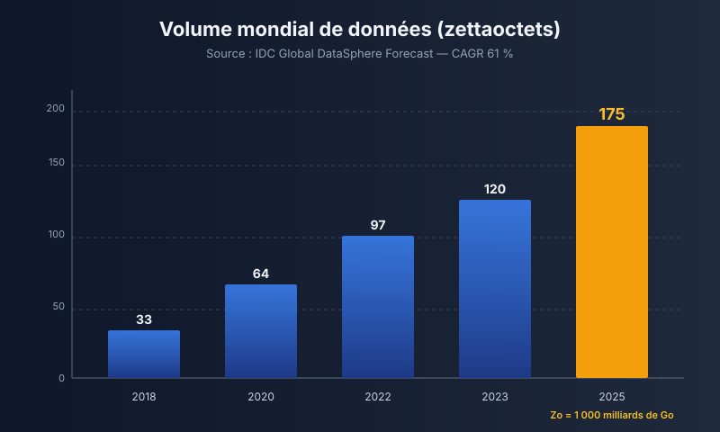
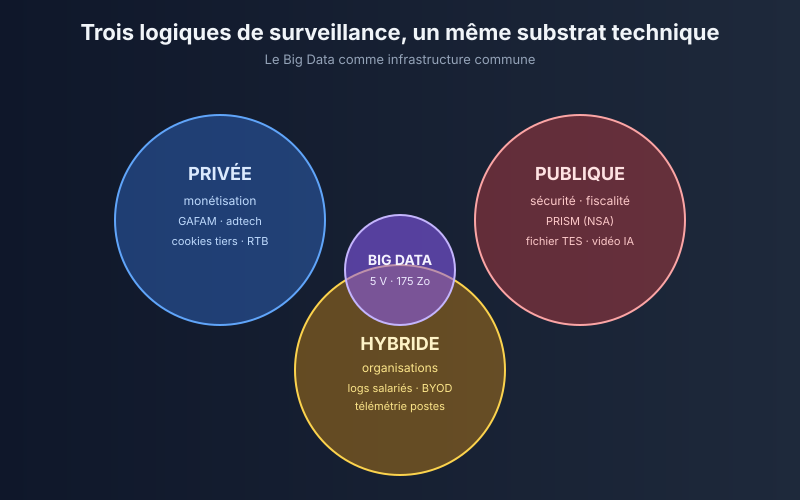
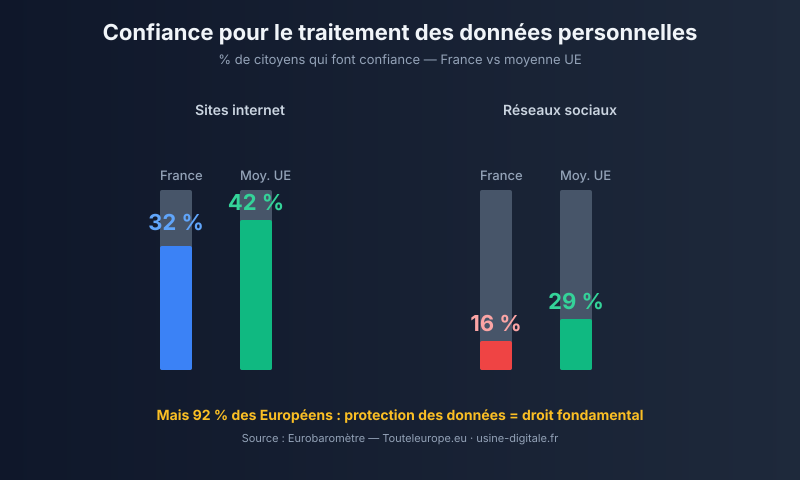
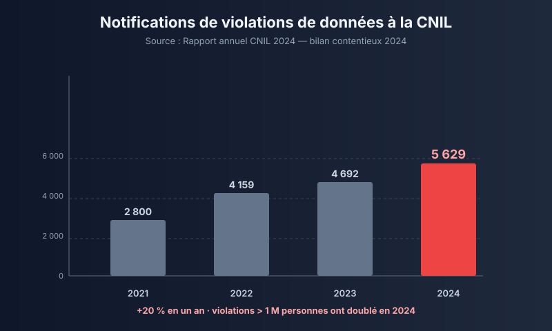
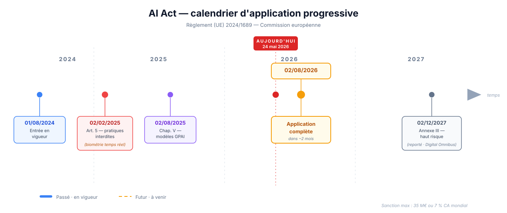

Une équation à trois inconnues à l'ère du tout-numérique.
Et pourtant, en France, seuls 32 % des citoyens font confiance aux sites internet pour traiter leurs données.
Sources : CNIL Rapport annuel 2024 · La Dépêche (entretien Baptiste Robert, 22/04/2026) · L'Usine Digitale (identité numérique européenne) · Touteleurope.eu (Eurobaromètre)
Le Big Data alimente une surveillance d'une ampleur inédite : à quelles conditions techniques, juridiques et organisationnelles peut-on préserver — voire reconstruire — la confiance numérique ?
D'où viennent les données ? À quoi servent-elles ?
Quand la collecte massive devient un regard permanent.
RGPD, AI Act, Privacy by Design, gouvernance.
Angle : volontairement équilibré · ni technophobe, ni naïf.
| Concept | Définition opératoire |
|---|---|
| Big Data | Données massives caractérisées par les 5 V : Volume, Vélocité, Variété, Véracité, Valeur. Modèle initial de Doug Laney (META Group / Gartner, 2001). |
| Surveillance | « Collecte routinière de données personnelles à des fins de gestion, de protection ou d'influence. » — David Lyon, sociologue, Surveillance Studies: An Overview, Polity Press, 2007. |
| Confiance numérique | Disposition rationnelle à exposer des données personnelles à un acteur en attendant qu'il en fasse un usage prévisible et conforme à ses engagements. |
La surveillance n'est pas par essence intrusive — c'est l'usage qui la qualifie. Cette neutralité conceptuelle est centrale pour la suite de l'analyse.
Sources : Doug Laney, « 3D Data Management », META Group, 2001 · David Lyon, Surveillance Studies: An Overview, Polity Press, 2007.

Sources : IDC Global DataSphere Forecast 2025 · Fortune Business Insights — Big Data Technology Market 2025.
COLLECTE → AGRÉGATION → OBSERVATION
(légitime à l'instant T) (plateformes, data brokers) (profilage, surveillance)
Conclusion partielle : la frontière entre Big Data et surveillance n'est pas technique, elle est politique et juridique. — Sources : Wikipedia · IRSEM · NPR.
| Acteur | Logique | Exemples |
|---|---|---|
| Privé | Monétisation, profilage |
GAFAM, adtech, RTB, cookies tiers |
| Public | Sécurité, fiscalité |
PRISM (NSA), fichier TES, vidéo IA |
| Hybride | Surveillance interne organisations |
Logs salariés, BYOD, télémétrie postes |
Cour de cassation, 18 juin 2025 : les courriels professionnels = données personnelles (art. 4 RGPD). Le salarié peut désormais demander l'intégralité de ses mails. Conséquence : DPO France 21 000 (2019) → 34 440 (2024) selon l'AFCDP.

Sources : Le Monde — chronique Jules Thomas (15/04/2026) sur l'arrêt Cour de cassation 18/06/2025 · AFCDP.

Sources : Eurobaromètre · Touteleurope.eu · L'Usine Digitale · La Dépêche (22/04/2026, entretien Baptiste Robert).
Trop d'organisations ont traité la protection des données comme un exercice de conformité documentaire — registres, mentions, cookies — sans investissement réel dans la sécurité opérationnelle.
⇒ Le RGPD a rendu la crise visible. Il ne l'a pas résolue.

Sources : CNIL — Rapport annuel 2024 (avril 2025) · Bilan contentieux 2024 · RGPD art. 83.

Reconnaissance faciale temps réel dans l'espace public, notation sociale.
Recrutement, scoring crédit, justice → audits, transparence, supervision humaine.
Modèles fondationnels (GPT, Claude, Gemini) : documentation, droits d'auteur, summary training data.
Sources : Commission européenne (digital-strategy.ec.europa.eu) · Service Public Entreprendre · accord provisoire « Digital Omnibus » du 07/05/2026.
Mais : 90 % des entreprises mondiales n'ont aucun cadre public de gouvernance IA. Seules 13 % déclarent une supervision humaine.
— Fondation Thomson Reuters / UNESCO (AICDI, ~3 000 entreprises, 11 secteurs)
Sources : RGPD art. 25 · Ann Cavoukian, Privacy by Design — 7 Foundational Principles, IPC Ontario, 2009 · L'Usine Digitale (étude AICDI, avril 2026).
Big Data = moteur de valeur réel et massif (175 Zo · 454 Md $)
Sa logique d'agrégation bascule structurellement vers la surveillance — privée, publique, hybride
La confiance ne se décrète pas : elle se reconstruit par la convergence du droit, de la technique et de la gouvernance
La conformité documentaire crée l'illusion de la confiance. Seule l'architecture défensive — héritée du modèle de menace, pas du registre RGPD — la rend crédible.
Question ouverte au jury : à mesure que les modèles d'IA deviennent des intermédiaires obligés entre citoyens et services — santé, banque, administration —, à qui revient la charge de prouver la confiance ?
Je vous remercie.
Bibliographie complète détaillée dans répétition/big-data-surveillance-confiance/sources.md (28 entrées vérifiées).